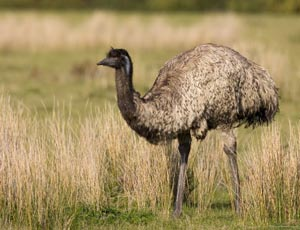
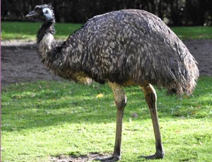

Der flugunfähige Emu, das zweite Wappentier Australiens, gleicht dem afrikanischen Strauß. Die schnellaufenden Tiere werden bis zu 1,60 m groß und leben vorwiegend in den trockenen Savannen Australiens. Eine farbenfrohe Unterart der Emus ist der Kasuar (Cassowary), der nur noch selten in den Regenwäldern im Norden vorkommt. Bei beiden Arten übernimmt das Männchen die Aufzucht der Jungen.
 15.11.2011